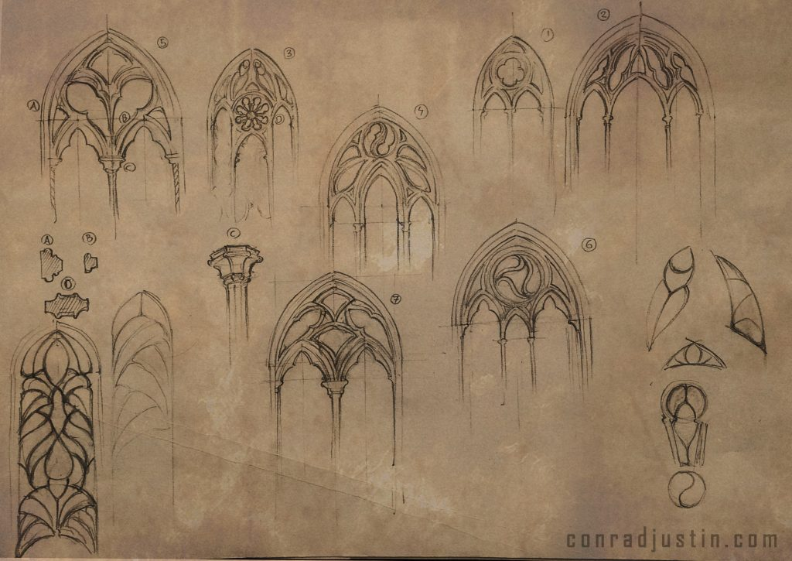
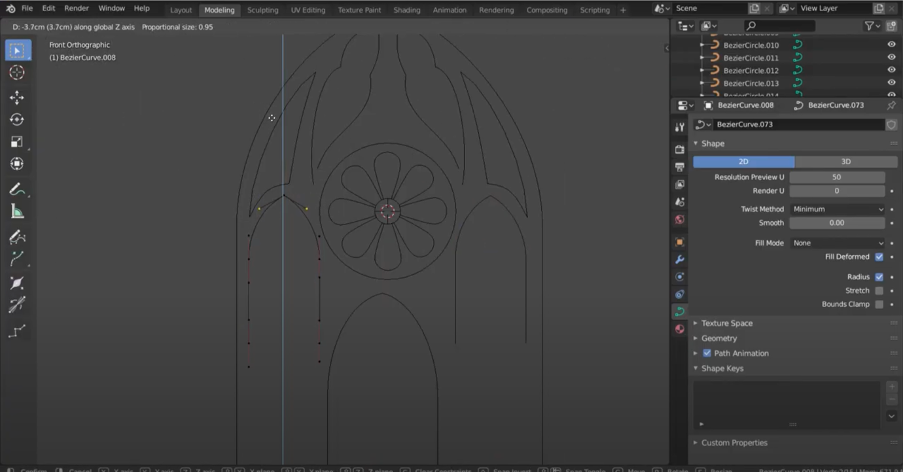
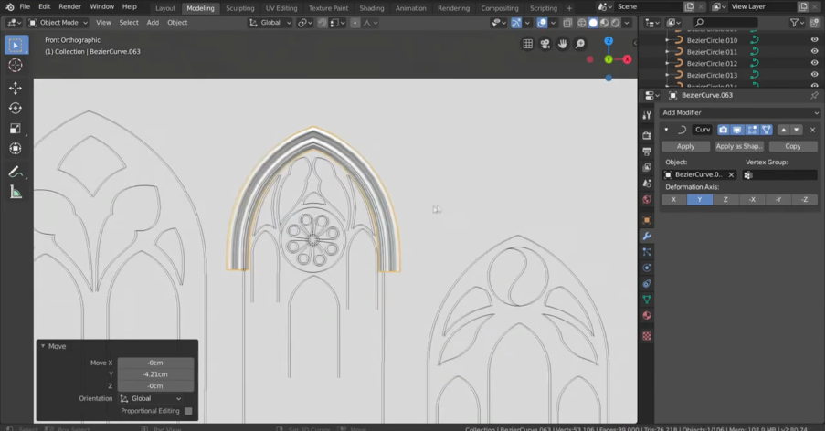

This week, I followed the tutorial Gothic Tracery Tutorial – Part 1 (Modeling) to learn how to create Gothic window tracery in Blender. Although I haven’t completed the entire modeling process, I’ve finished importing the background image, using curve modeling, and applying some curve modifiers. This process has greatly helped me understand Blender’s curve modeling approach.
Stage 1: Importing Images and Setting References
In Blender 2.8, I imported a line drawing of Gothic window tracery as a modeling reference and placed it in the front orthographic view. This seemingly simple operation helped me gain a clearer understanding of how to integrate 2D images with 3D modeling.

Stage 2: Drawing Bezier Curves
Using the Bezier curve tool, I traced the outline of the tracery along the image contours. By entering Edit Mode, I adjusted the position and tangent direction of each vertex, and set the curve to 2D to facilitate applying the Curve Modifier later. This part familiarized me with organic curve modeling without using polygons.

An important lesson learned: the Resolution Preview U parameter of Bezier curves significantly affects subsequent deformation effects. Setting it to a higher value (e.g., 50) enhances detail precision, but it’s crucial to balance this against performance impacts.
Stage 3: Applying Curve Modifiers
After completing the initial cross-section modeling, I attempted to combine it with Bezier curves, using the Curve Modifier to make the window frame bend along the curve. Although this step was complex, by adjusting the Deformation Axis to the Y-axis, I successfully fitted the model to the contour of the Gothic arch.

What I gained
- Have deeply mastered the editing techniques of Bezier curves, especially how to control the shape and connection of curves.
- Understood the difference between Object Mode and Edit Mode and their roles in the modeling process.
- Learned to use the Curve Modifier to deform linear objects into complex structures through paths, a function I had never tried before.